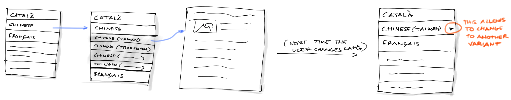
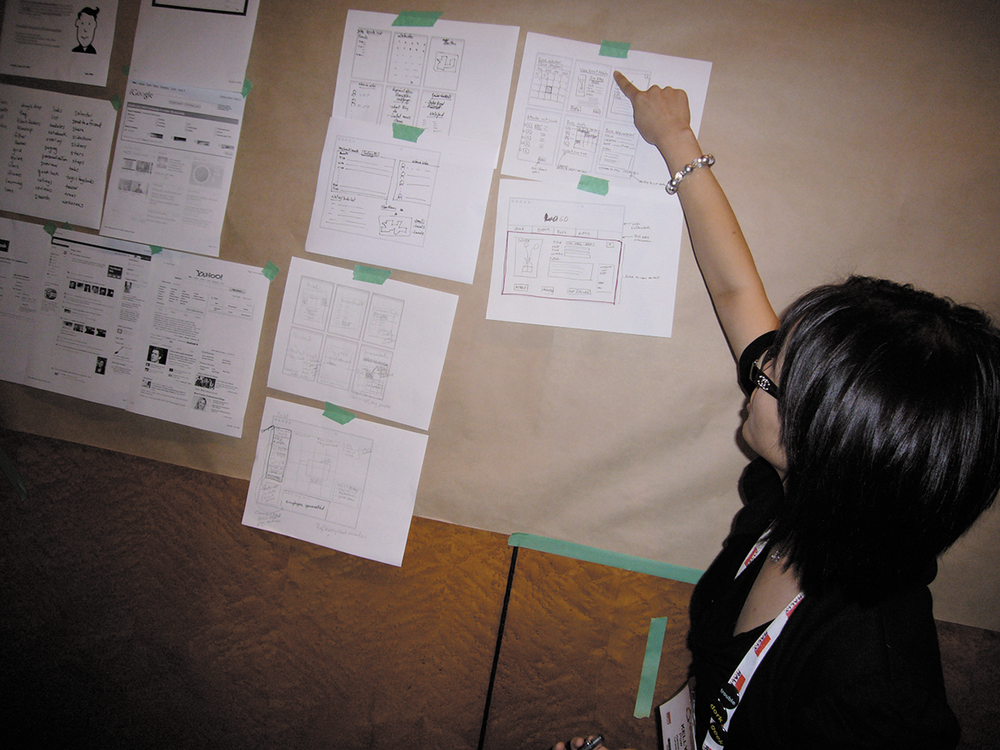
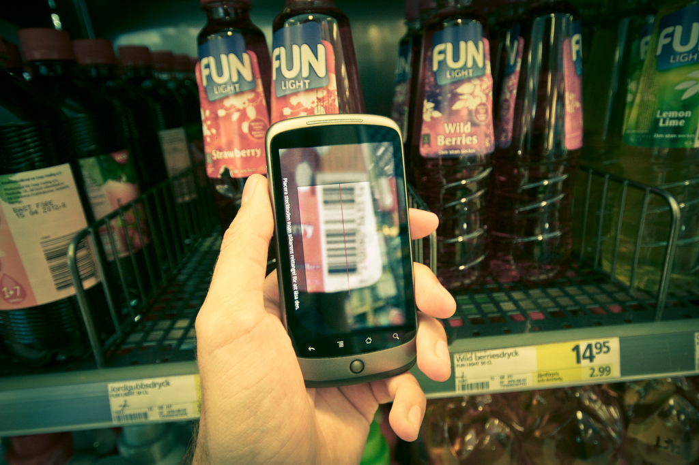

Sketching

Widgets

Interacción (secuencia)

Interacción (superpuesto)

Distintos niveles de fidelidad

Herramientas básicas

Dispositivo

En digital

Tableta de dibujo + MyPaint
Ventajas de MyPaint:
- Lienzo infinito. Puedes extender el dbujo hacia cualquier lado.
- Gran variedad de tipos de trazo.
- Soporte a capas. Puedes separar dibujo, texto, y sombreado.
- UI limpia. Posibilidad de ocultar UI y trabajar a toda pantalla.
- Permite slavar borradores rápidamente para mantener estados intermedios.
La primera idea no siempre es la mejor

Marcos conceptuales

Marcos conceptuales 1D

Marcos conceptuales 2D

Marcos conceptuales NxN

Revisar los diseños y obtener feedback

Diseño por parejas
- El generador
- El sintetizador
El ciclo de crítica

Comunicar experiencias más allá de la UI

Comics

Comunicación visual